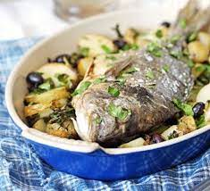

Sea-Bream

Whole roast bream with potatoes & olives
The roast bream is known with is dense, juicy white flesh,
with a satisfying meaty texture, a clean taste and a delicate flavour.
Comes on a bed of delicious baked potatoes makes it heaven for the
thong.
Ingredients
- 400g new or small potato
- large handful small black olives
- 1 garlic clove, chopped
-
large bunch flat-leaf parsley,
leaves roughly chopped, stalks reserved
- 2 tbsp olive oil
- zest half a lemon
- 1 whole sea bream, about 450g/1lb, gutted, head on
- small glass white wine